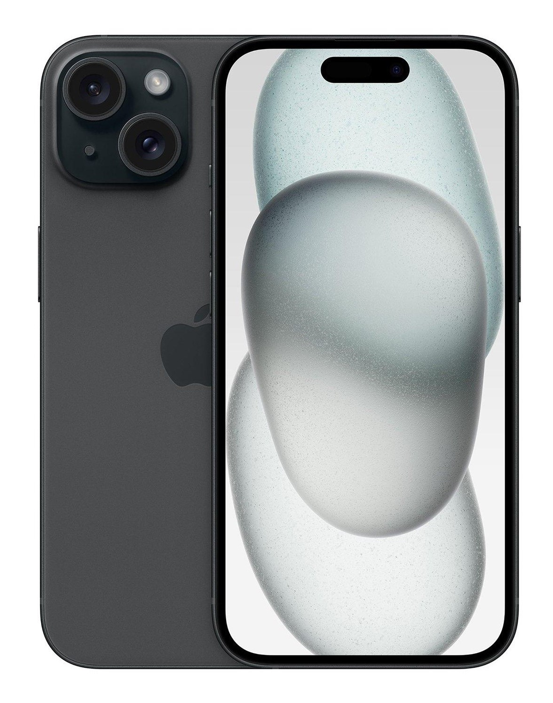

iPhone 15 Pro Max
El iPhone 15 Pro Max representa la máxima expresión de la tecnología móvil. Equipado con el nuevo chip A17 Pro, ofrece un rendimiento extremadamente rápido y eficiente, ideal para usuarios exigentes que requieren la mejor experiencia en gaming, edición de video 4K y aplicaciones profesionales. Su pantalla Super Retina XDR de 6.7 pulgadas proporciona colores vibrantes y un contraste excepcional, mientras que el diseño de titanio garantiza durabilidad y ligereza. La cámara triple con sensores avanzados y capacidades mejoradas de fotografía computacional permite capturar imágenes y videos con una calidad sin igual, incluso en condiciones de baja luz. La tecnología ProMotion y el soporte para el nuevo Apple Pencil (si está disponible) amplían aún más sus capacidades creativas.
iPhone 15 Pro
El iPhone 15 Pro combina potencia y portabilidad en un diseño elegante. Con el chip A17 Pro, este modelo ofrece un rendimiento impresionante y una experiencia de usuario fluida. Su pantalla Super Retina XDR de 6.1 pulgadas ofrece una visualización vibrante y nítida. La configuración de cámara triple, similar a la del 15 Pro Max, asegura una calidad fotográfica superior, mientras que su diseño de titanio proporciona robustez y ligereza. Es ideal para aquellos que desean un dispositivo de alto rendimiento en un tamaño más compacto.
iPhone 15 Plus
El iPhone 15 Plus ofrece una pantalla grande de 6.7 pulgadas con la tecnología Super Retina XDR, perfecta para quienes disfrutan de una experiencia visual inmersiva. Equipado con el chip A16 Bionic, combina potencia y eficiencia para un rendimiento excepcional en aplicaciones diarias y entretenimiento multimedia. La cámara dual mejora la captura de fotos y videos, y su diseño de aluminio proporciona durabilidad y un peso equilibrado. Este modelo es ideal para quienes buscan una pantalla grande y un rendimiento sólido sin necesidad de las características más avanzadas.
iPhone 15

El iPhone 15 es la opción versátil y accesible dentro de la gama más reciente. Con el chip A16 Bionic, ofrece un rendimiento rápido y eficiente para todas tus necesidades diarias. Su pantalla Super Retina XDR de 6.1 pulgadas proporciona una visualización clara y vibrante. La cámara dual mejora la calidad de tus fotos y videos, y su diseño de vidrio y aluminio combina elegancia con durabilidad. Es perfecto para quienes buscan un iPhone moderno con tecnología avanzada a un precio más accesible.